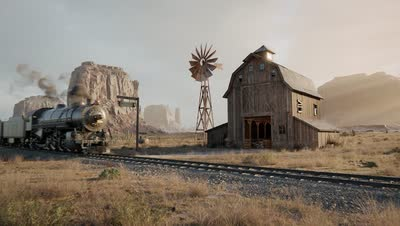
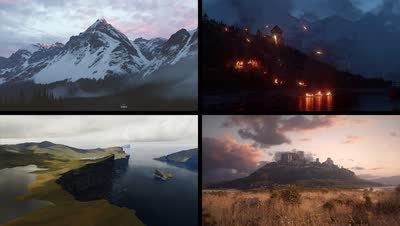

記事・リンクを検索
⌘K
24 件のポスト

海外のCGアーティスト向けYouTubeチャンネル「CG Forge」で紹介された、杉﨑亮太氏の自主制作「Breath of the Ancient Earth」。制作プロセスのQ&Aと、普段の作品収集・リファレンス管理についてもnoteでまとめられている。

Blenderの便利なツール2種。「Fast 2D Remesh Tool」は地面生成やパス間の隙間埋めを目的とした高速2Dリメッシュツール、「Spline Mesh Tool」はスプラインに沿ってメッシュを変形させるツール。

Blender 4.4とHoudiniを使って、西部劇風の列車が走るシーンをリアルに作り上げる30分のチュートリアル。

Blenderを用いてセミプロシージャルに制作された背景作品「Port Town」の制作手法を、動画クリップ付きで解説するブレイクダウン。

Samuel Krug氏によるチュートリアル「How I Created a Massive Coastal Mountain Scene in 3D」。技術的な側面だけでなく、書籍の描写を基にした再現や試行錯誤の過程も見られる点をおすすめしている。

現役の背景アーティストたちがDiscordで集まった質問に答えるライブ配信。大規模シーンの最適化からポートフォリオ、業界の話まで扱う。

Blade Runner風のシーン「Prison 2049」と宇宙を舞台にしたCGアニメーションについて、コンポジットとグレーディングの工程を追う2本のブレイクダウン。

Blenderでシネマティックな大気感を作るチュートリアル。ライト、影、空の作り込みと、ポストプロダクションでの仕上げを扱う。

UbisoftやEAで勤務経験のあるEnvironment Concept Artistによるチュートリアル「The Lost Soldier - Environment Concept Design」（Wingfox）。BlenderとPhotoshopを使い、主にデザイン面にフォーカスした内容。

Blenderでフォトリアルなテクスチャを制作する方法を解説する動画。

Blenderで作ったシネマティックな環境ショットの制作過程を、リファレンス集めからライティング・仕上げまで17分で解説したブレイクダウン。

Megascans Bridgeで「Highpoly Source」をオンにするとハイポリアセットもダウンロードできることを紹介。そのままでは重いため、近景でなければ10%以下までPoly Reduceしても問題なさそうという目安も共有している。

QGISからDEM（数値標高モデル）とマップテクスチャを書き出し、Blenderに読み込んで3Dの標高モデルを作る手順の解説。

Blender 5.0でフォトリアルな空を表現する方法を解説した動画。

OpenTopography側のAPIキー必須化でBlenderGISの標高データ取得が失敗する問題を、設定を書き換えて解消する手順の解説。

カラースペースとは何かから始まり、ACESの利点、実際の各ソフトへの導入手順までを3本で扱うカラーマネジメント解説シリーズ。

Blenderを使ってシネマティックなルックを再現するチュートリアル「Home At Last」。

Blenderで制作されたヨーロッパの都市景観作品のプロセスを解説する80lvの記事。スキャンアセットからパーツごとのアセット制作方法などが学べる。

無料で使える高品質な車の3Dアセットを提供するサイト「Wire Wheels Club」。

Ian Hubert氏の「Lazy Tutorials」シリーズから、Blenderで都市を組み上げる回。1分強で手順だけを一気に見せる構成。

Blizzard Entertainment所属で映画『Dune』にも参加したAndrew Hodgson氏による、UV展開の実演。過去に多田学氏のセミナーでも参考ポートフォリオとして紹介されていた。

Blender、RealityScan、UE5、Nukeを使ったシーン制作のチュートリアル。Houdiniとは異なるワークフローだが、背景制作に通じる部分が多いとしている。

背景制作に定評のあるBaptiste氏が制作した作品のBlenderファイル。

自動的にリグを作成してくれるBlenderのアドオン。まだWIP段階だが、無料でダウンロード可能。